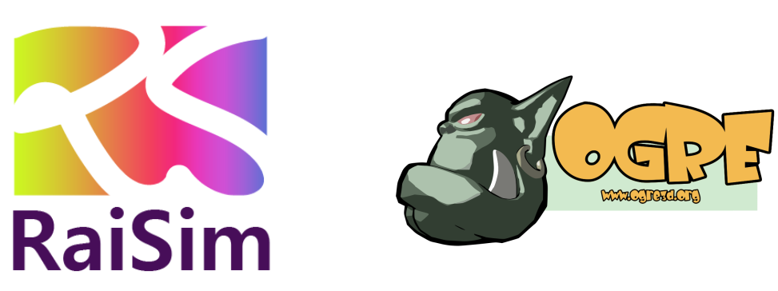

Introduction¶
RaiSim is a physics engine developed by RaiSim Tech Inc. It is designed to provide both the accuracy and speed for simulating robotic systems. However, it is a generic rigid-body simulator and can simulate any rigid body very efficiently.
Why RaiSim?
The speed is benchmarked against other popular physics engine. ([1])
The accuracy of RaiSim has been demonstrated in a number of papers ([2], [3], [4], [5], [6])
Easiest C++ simulation library to learn/use
A minimum number of dependencies (only on STL and Eigen)
Visualizer¶
There are two options available for visualization. Most of the examples included in this repo requires raisimUnity to visualize. You have to run raisimUnity before running the examples.
raisimUnity¶
{kind=link}
If this doesn’t work on your linux machine, try raisimUnityOpengl, which is a stripped-down version
binaries included in the
raisimUnitydirectoryeasy to use but less features
runs as a separate process
works well in Linux, Mac and Windows
source code available here under the MIT license. Written in C#
raisimOgre¶
{kind=link}
harder to use but rich in features
works well in Linux. Should work in other two major OS’s but not tested
easy to customize. Only C++ code
source code available here under the MIT license
System Requirements¶
Linux
We recommend ubuntu 16.04, 18.04 and 20.04 but RaiSim might work on other distributions. Works only on a X86 CPU with an AVX2 instruction set.
Windows 10
Visual Studio 2019. X86 CPU only.
Mac
Latest version. Requires the AVX2 instruction set. Works on both M1 (Apple ARM) and X86.
Example code¶
Here is an example of an RaiSim application code.
#include “raisim/World.hpp”
#include "raisim/RaisimServer.hpp"
int main() {
raisim::World::setActivationKey("PATH_TO_THE_ACTIVATION_KEY");
raisim::World world;
auto anymal = world.addArticulatedSystem(PATH_TO_URDF);
auto ball = world.addSphere(1, 1);
auto ground = world.addGround();
world.setTimeStep(0.002);
/// launch raisim server for visualization. Can be visualized on raisimUnity
raisim::RaisimServer server(&world);
server.launchServer();
while (1) {
raisim::MSLEEP(2);
server.integrateWorldThreadSafe();
}
server.killServer();
}
Here is a cmake file to compile above application code.
cmake_minimum_required(VERSION 3.10)
project(raisim_examples LANGUAGES CXX)
find_package(raisim CONFIG REQUIRED)
find_package(Eigen3 REQUIRED)
include_directories (${EIGEN3_INCLUDE_DIRS})
add_executable(APP_NAME ${file_name})
target_link_libraries(APP_NAME PUBLIC raisim::raisim pthread)
target_include_directories(APP_NAME PUBLIC ${CMAKE_CURRENT_SOURCE_DIR}/include)
A working version can be found here (RAISIM_EXAMPLE).